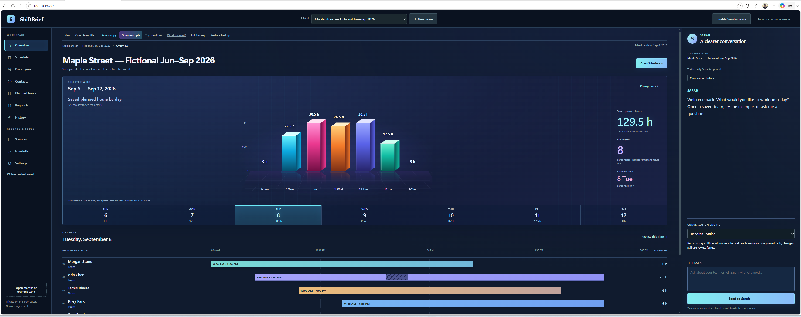

Actual app · fictional demonstration records01 / Free Windows app
ShiftBrief
Available · v0.1.0A local scheduling workspace for employee availability, reviewed shifts and recorded work. Windows installer available; voice and AI are optional rather than required.
- Free Windows installer
- Offline records and staffing
- Reviewed staffing suggestions